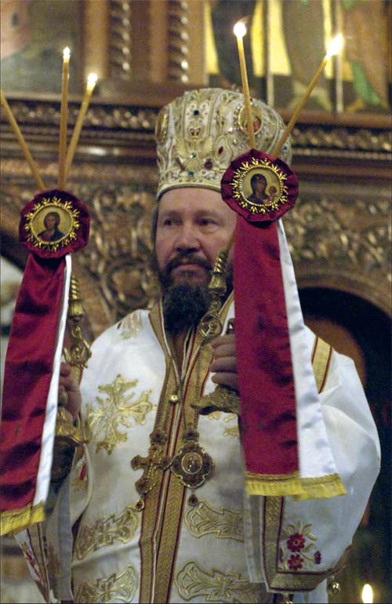

Епископ
Епископ британско - скандинавски Г. Доситеј
Eпископ Доситеј (Деспо Мотика) рођен je празник Покрова Пресвете Богородице, 14. октобра 1949. године у селу Загони, општина Олово код Сарајева.Његове благочестиве родитеље, оца Неђу и мајку Росу, Бог је обдарио бројним породом. Захвални Богу за тај дар они су, верни предачком наслеђу, своју децу од малена васпитали у снажном духу припадности и верности Православној цркви. Од ране младости везан за Цркву и Свето Богослужење, млади Деспо, садашњи наш Владика, одазвао се призиву Господњем и одмах по завршетку Основне школе, ступа у службу Свете Цркве Христове као ученик прве генерације Монашке школе у Манастиру Острогу.
Овај први степен богословског образовања завршава као један од најбољих ученика у својој генерацији (1967-1969). Богословију Светог Арсенија Сремца завршава у Сремским Карловцима, а Богословски факултет у Београду. Због показаног високог успеха у дотадашњем богословском образовању, послат је на постдипломске студије из теологије (специјализација из области пасторалне психологије) које је током три године похађао на Богословским факултетима у Регенсбургу (Немачка ) и Берну (Швајцарска). Монашке завете положио је у Манастиру Светог Николе на Озрену 1970. године. У чин јерођакона и јеромонаха, исте године рукоположио га је Епископ Зворничко-тузлански Лонгин (Томић) у Манастиру Тавна, у коме је вршио дужност духовника, упоредо са студирањем на Богословском факултету.

По потреби задовољења духовних потреба нашег народа у Јужној Америци, послат је од стране врховне црквене управе у Аргентину, где је током 1985-1988. г. организовао Српску православну мисију са три богослужбена места. Са верним народом подигао је цркву Рођења Пресвете Богородице у Буенос Ајресу. До избора за Епископа, вршио је дужност секретара Епархијског управног одбора епархије Канадске у Торонту. За викарног Епископа Патријарха српског са титулом Епископа Марчанског, изабран је 1989. године. Од Светог Архијерејског Сабора опредељена му је дужност да испомаже дотадашњем Епископу Западноевропском Лаврентију (Трифуновићу) у црквеним потребама те Епархије.
У чин Епископа хиротонисан је под сводовима древне Пећке Патријаршије, током заседања Светог Архијерејског Сабора.на празник летњег Светог Николе, 22. маја 1990. Крајем децембра месеца исте године, на историјском заседању Светог архијерејског сабора у Београду, током којег је изабран нови Патријарх српски Павле, формирана је Епархија британско-скандинавска и за њеног првог Епископа изабран је Владика Доситеј.
У протеклих 16 година, наш Владика бринуо се и уз помоћ свештенства и верног народа здушно радио и ради на унапређењу црквеног живота и мисије Православне цркве на простору поверене му Епархије. Досадашњи плодови тога благословеног рада јесу добро уређене постојеће и новоформиране парохије са богослужбеним простором и довољним бројем свештенослужитеља.
У току је уређење главног духовног центра наше Епархије, а то је будући манастир Покрова Пресвете Богородице у Оркељунги, јужна Шведска. Надамо се и Богу се молимо да се ти плодови још умноже на духовно добро Српске православне цркве и њеног народа и целе хришћанске васељене.
Епископ Доситеј говори Немачки и Шпански језик